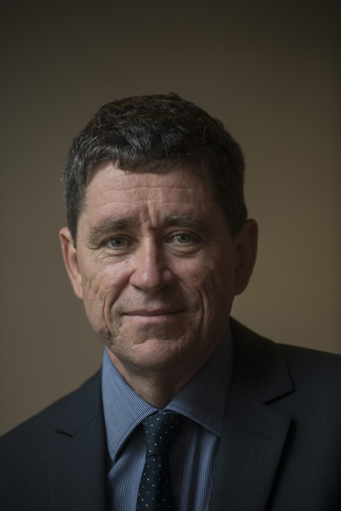
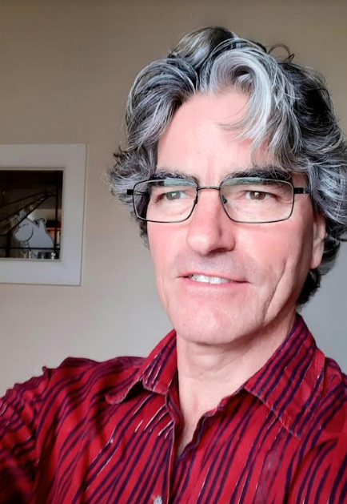

supervisors

Prof. Matthew Bailes

Dr. Chris Flynn

Dr. Emma Carli

Bailee Wolfe

Akhil Jaini
Contributors

Aaron Choi

Agatha Beare

Annabelle Leung

Daniel Rosina

Evie Vale

Henry Przychodzen

Kim Yan

Lucy O'Shea

Nandini Vyas

Rhea Fernandez

Sevryn Danilov

Tristan Than
Credits
Project completed by Nandini Vyas, Evie Vale, Sevryn Danilov, Lucy O'Shea, Aaron Choi, Agatha Beare, and Rhea Fernandez.
Report written by all contributors and Dr. Chris Flynn.
Thank you to Tristan Than, Daniel Rosina, Annabelle Leung, Henryk Przychodzen, and Kim Yan for their contributions to the early stages of the research. Thank you to Prof. Matthew Bailes for providing his expertise. This project is funded by ASTRAL.
Introduction
Modern telescopes and satellites are more than capable of detecting celestial objects from across the visible universe, and are able to collect extensive colour and brightness magnitude data on all of them using advanced tools and technologies. However, the largest roadblock to completing the catalogue, is our own Sun itself. It is far too close and bright, causing every lens pointed at it to completely malfunction and fail to gather any accurate measurements.
Nonetheless, there is a way to get this information, and it is to look towards other stars in the night sky that share extremely similar properties to our own, known as solar twins. Previous research studies have found hundreds of these "twins" that are almost identical to Sol, and the GAIA satellite launched by the ESA has the exact measurements we are looking for identified in the twins. Using regression analysis of the slight variations within each star, a precise estimation of Sol's colour and magnitude was found across a variety of colour bands.